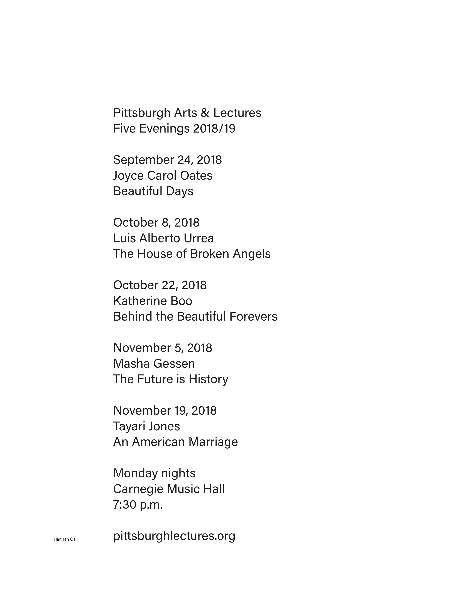
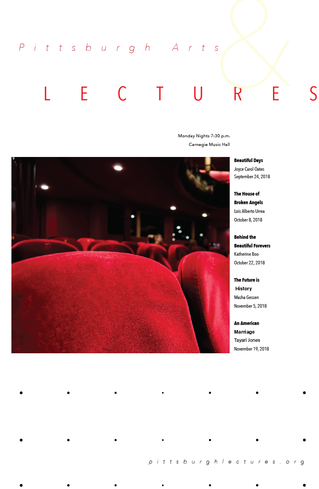
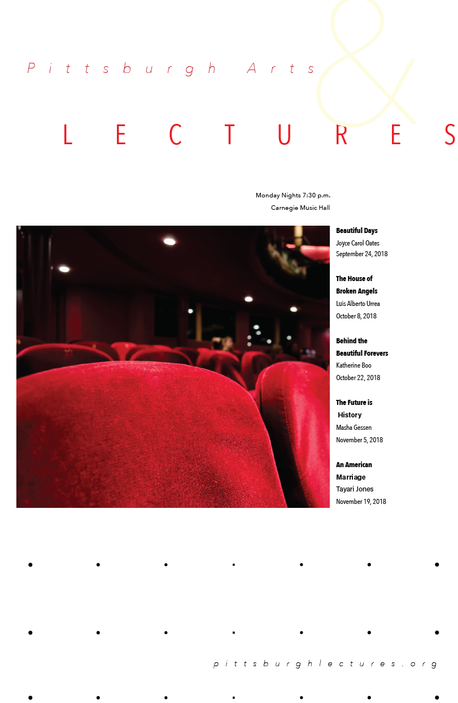
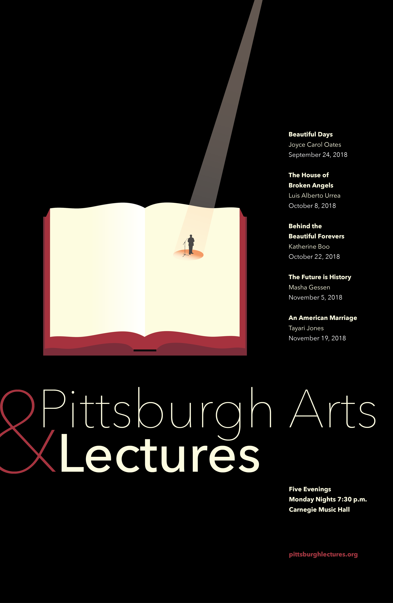
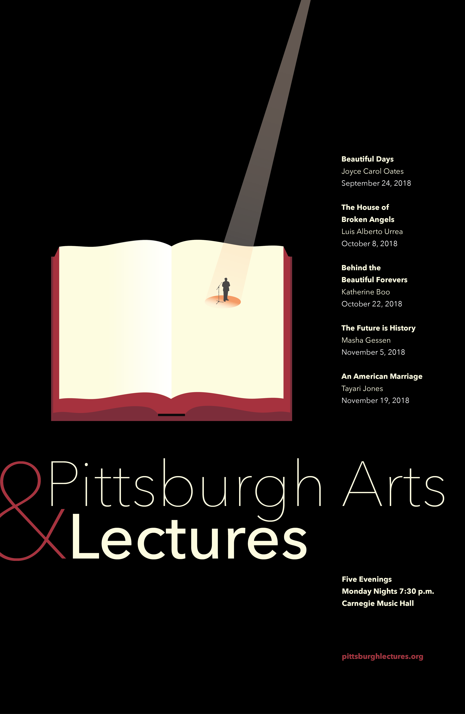
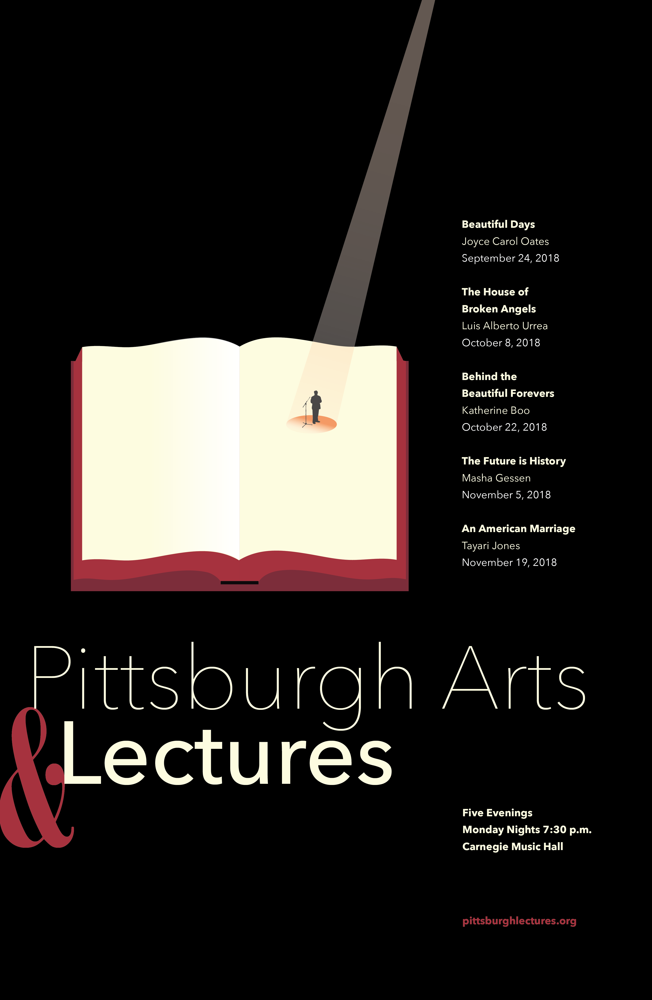
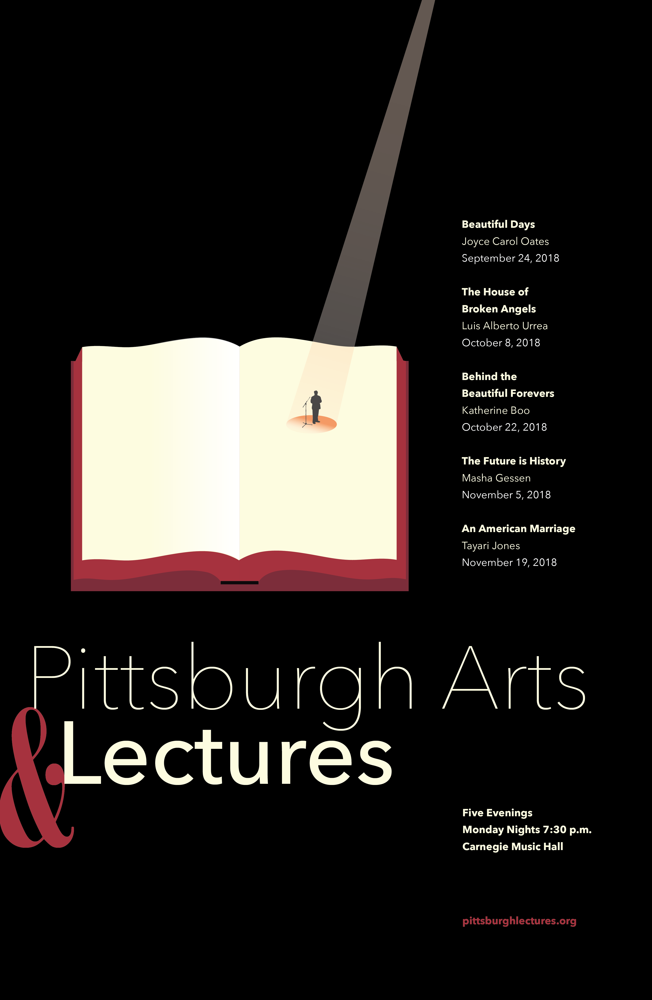

Illustrator, Indesign


 



 

 

1. to emphasize the author's names instead of the book titles, since I realized during crit that most well-known authors are better known by their names than by their newest book
2. adjusting the ampersand position in relation to the title, so there weren't any awkward tangents
3. to move the text "five evenings" to the top and change its color, so that the red had more of an even balance throughout the composition.